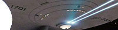
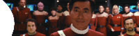
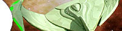
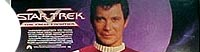
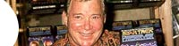

| Origens
de um clássico
Conheça
a fonte de inspiração do episódio "Balance of Terror"
aqui. Série
Clássica remasterizada
 Luiz
Felipe Tavares comenta as mudanças
efetuadas na Clássica. Estivemos
no Star Trek Experience
Leia
aqui a resenha de Leandro M.Pinto a respeito
do parque temático de Jornada. Análise
dos DVDs do 2º ano!
O
boxset nacional da segunda temporada também foi assistida por nós!
Leia aqui. Análise
dos DVDs da Série Clássica
O
boxset nacional da primeira temporada foi assistida por nós! Leia aqui.
Leonard Nimoy no Brasil!
Saiba
tudo sobre a visita do ator de Spock, em outubro de 2003, clicando aqui.
Os Gorns atacam
no Trek Brasilis!
Saiba
tudo sobre os lagartões da Série Clássica de Jornada clicando aqui.
Ele nunca estará
morto, Jim
Confira
a homenagem que o TB fez a DeForest Kelley dois anos após sua morte aqui.
35 Anos: Vozes saudosas
Confira
a matéria especial sobre as dublagens nacionais da Série Clássica,
aqui. 35
Anos: Tributo a um mito
Leia
aqui a homenagem do TB, por Luiz Castanheira,
ao 35º aniversário de Jornada.
Tudo sobre os lançamentos da Série Clássica
em DVD,
seja no Brasil ou no exterior, você confere logo abaixo.
O
último volume da Clássica nos EUA
Conheça
o DVD 40 da coleção, que tem 2 edições do piloto "The Cage",
aqui.

Nosso mais feroz colunista, Gustavo Leão, comenta
diversos aspectos da gigantesca franquia Jornada nas Estrelas.
As
Aventuras do capitão Sulu

Ela existe, mas em livros e HQs. Gustavo explica tudo sobre o assunto, aqui.
A revisita de J.J.
Abrams
Gustavo comenta as novidades sobre o futuro filme de Jornada, aqui.
Star Trek: New Frontier
A
verdadeira 5ª série de Jornada, esmiuçada por Gustavo
Leão, aqui. Bring
Back Kirk
Conheça
o Shatnerverso, o único lugar em que Jornada ainda vive, aqui. O
começo do fim!
 Haverá
mesmo um 11º filme de Jornada? Saiba detalhes e boatos aqui. Yamato:
a "Jornada" do Japão
Saiba
tudo sobre uma das séries animadas de ficção mais
amada até hoje, aqui.
A
estréia mundial de "Nemesis"
Veja
como foi a premiére em Los Angeles e conheça nossa opinião leonina clicando aqui. Em
defesa de Jornada nas Estrelas V
 As
coisas boas do filme dirigido por Shatner e criticado pelos fãs estão aqui. Andromeda:
o legado de Roddenberry
Veja
onde Gustavo Leão acha que a Jornada clássica segue viva, clicando aqui. The
Big Goodbye
Desiludido
com a franquia, nosso colunista se despede por uns tempos aqui. Voyager:
valeu a pena?
Ao
final da série, veja tudo que o Leão tem a dizer sobre ela, clicando aqui. Procuram-se
novas idéias
Os
produtores de Jornada estão com uma crise criativa? Clique aqui
para saber. Encontrando
a luz no fim do túnel
 Gustavo
Leão aponta o que vê de bom em meio à decadência de Jornada, aqui. À
procura do espírito natalino
Apesar
da crise, o Natal de 2000 guardou algumas boas promessas para os fãs, aqui. O
povo contra Rick Berman
As
inimizades do "chefão" de Jornada estão pondo tudo a perder?
Saiba aqui. O
futuro negro de Jornada nas Estrelas
Gustavo
Leão inaugura sua coluna com um prognóstico ruim para Jornada, aqui. |